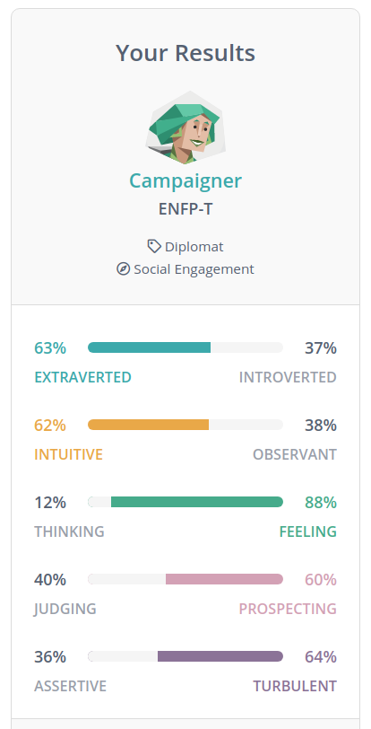

Examining my identity is something that I'm doing a lot more as I grow older. Identity is a complex thing; a relationship between your individuality, your ethnic context, your class context and the political conditions of your life. The easiest way to describe my mindset throughout my 20s is being working class. Working with my hands, drifting further towards full time work than tertiary institutions, and strong values of solidarity of labour and egalitarianism. This is wrapped within my ethnicity as a Pakeha New Zealander born with Jewish heritage, I think I felt strong feelings of affinity with the struggle of displaced people, or more broadly the struggle against inherited opression. However particularly in the last 5 years I feel I have to own the fact that I used that identity to run away from whiteness, and all the baggage of growing up Pakeha in a country with fraught colonial history. Egalitarian values are a double edge sword. As an aspiration, on its face it sounds rightious to want everyone to see themselves as equals. But society is deeply and obviously unequal and any conversation about values and identity from my lips or fingers should include my feelings politically about where we are as a community and what we want to see change.
To draw this back to the personal, individual context. My values are to be kind always, to treat everyone as a potential teacher and mentor, and to keep in mind that it takes a village to raise anyone, or get anything done. One of the redeeming qualities of the COVID-19 lockdown is I think it brought into focus just how much we need each other. I wanna magnify that within myself as much as I can.
In terms of skills ive bounced from sales to technical work pretty slowly and methodically over my career and the client facing side of both of those paths really showed me that empathic values and good communication skills translate to good soft skills in the workplace. If you can meet someone where they are and help them get what they need done, youre in a strong position in whatever client facing job you find yourself in. I think one of the weaknesses I have though is when that collabourative person to person contact is stripped away I can be very discouraing to myself. The isolating aspect of remote learning has been a quite sharp instruction on how much I have relied on social energy to thrive in the past. Ive been told by a few people also that I have the capability to be incredibly stubborn, which isnt a quality I value at all. One of the advantages about going into development is that I dont actually have the expertise to be stubborn! To be stubborn when youre just starting a totally fresh path is to shoot yourself in the foot.
Besides stubbornness though I did do some investigation on how to codify my personality type in a more concrete way. I took the Myers Briggs test and was quite pleasantly suprised to find it felt representative.
kinda like getting a mean as horroscope :)
So Campaginers are described as being less interested in the pleasure of being in the moment than they are in forging connections with people which I feel did strongly resonate with me. I spent many years as a union rep for my department, which wasnt bought on at all by a fondness of conflict or challenging authorities, but a feeling of duty to those who needed support so they could have the strength to fight their battles. A tonne of these interactions were ethically difficult, in that I was a casual employee and a union rep. I had a duty to defend the members whenever they had disputes with management, but being in a dispute with management would often compromise my personal work outcomes, make workplace relations I relied on with powerful people more fraught with tension and no doubt I missed out on a tonne of work by stepping on peoples toes. In the gig industry that dependance on relationships is also what keeps your phone ringing and what keeps your fridge full so that relationship focus really does go both ways.
In the past I've often taken the path of least resistance when it comes to solving problems. For instance living with a very good friend as flatmates, when the final clean up bond return process got too fraught I dealt with it almost with an absence of technique altogether by just taking the work apon myself and keeping my mouth shut. Now however with more life experience under my belt I think its more advantageous to just meet people where they are and offer your help while maintaining that it is in your mutual goals to co operate. Reiterating that you will be supportive and present but not allowing yourself to be exploited by others. Not shying away from showing vulnerability to people can allow them to trust you more easily. Not in a transactional "jedi mind trick" kind of way, but just living your life with a sincerity that alows people to be confident with you.
"Theres a crack in everything. Thats how the light gets in" - Leonard Coen
Cheesy as it might be to be quoting Leonard Cohen to round this out, it nicely sums up my thoughts about vulnerability as strength. Authenticity as trust.